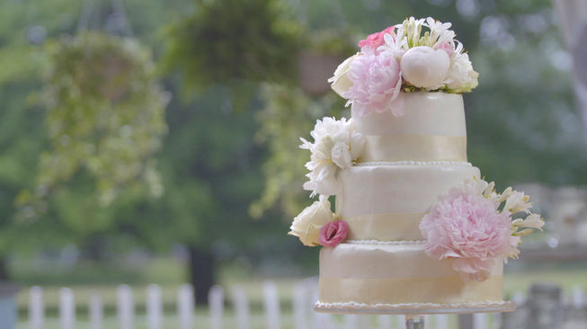

Fleurige bloem

Aantal likes: 172
- 390 g kristalsuiker
- 13 eieren
- 12 g vanillesuiker
- 45 g maizena
- 220 g tarwebloem
- 250 g poedersuiker
- 250 g roomboter
- 225 g aardbeienjam
- 150 g marsepein
Comments (2)
Piet_jan
Een overheerlijke taart, makkelijk te maken en ziet er mooi uit.
Lisa1998
De taart is voor veel personen en dus perfect om te gebruiken voor een bijzondere gelegenheid.